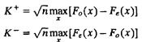
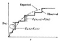
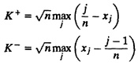

| Previous | Table of Contents | Next |
This test is named after the statisticians A. N. Kolmogorov and N. V. Smirnov who developed it. An earlier version of this test was proposed by A. N. Kolmogorov in 1933. It was later modified by N. V. Smirnov in 1939. Like the chi-square test, the K-S test allows one to test if a given sample of n observations is from a specified continuous distribution. It is based on the observation that the difference between the observed CDF (Cumulative Distribution Function) F0(x) and the expected CDF Fe(x) should be small. The symbols K+ and K- are used to denote the maximum observed deviations above and below the expected CDF in a sample of size n:


FIGURE 27.1 A K-S test requires measuring the maximum deviation of the observed CDF from the theoretical CDF.
Here, K+ measures the maximum deviation when the observed CDF is above the expected CDF, and K- measures the maximum deviation when the observed CDF is below the expected CDF If the values K+ and K- are smaller than K[1-α;n] listed in Table A.9 of the Appendix, the observations are said to come from the specified distribution at the α level of significance.
One common mistake in finding the K- statistics is to compute the maximum of Fe(xi) - Fo(xi) . This is incorrect. Since Fo consists of a horizontal line segment at Fo(xi) in the interval [xi, xi +1) the maximum difference occurs just before xi+1, shown in Figure 27.1. Thus, Fe(xi + 1) - Fo(xi) is the correct difference to use in computing K-.
For random numbers distributed uniformly between 0 and 1, the expected CDF is Fe(x) = x and if x is greater than j - 1 other observations in a sample of n observations, then the observed CDF is Fo(x) = j/n. Therefore, to test whether a sample of n random numbers is from a uniform distribution, first sort the observations in an increasing order. Let the sorted numbers be {x1, x2,..., xn} such that xn-1 ≤ xn. Then K+ and K- are computed as follows:

By comparing the computed K’s with the values listed in Table A.9, we can determine if the observations are uniformly distributed.
| xn = 3xn-1 mod 31 |
The normalized numbers obtained by dividing the sequence by 31 are 0.45161, 0.35484, 0.06452, 0.19355, 0.58065, 0.74194, 0.22581, 0.67742, 0.03226, 0.09677, 0.29032, 0.87097, 0.61290, 0.83871, 0.51613, 0.54839, 0.64516, 0.93548, 0.80645, 0.41935, 0.25806, 0.77419, 0.32258, 0.96774, 0.90323, 0.70968, 0.12903, 0.38710, 0.16129, 0.48387.
| Previous | Table of Contents | Next |
){kind=link}
){kind=link}